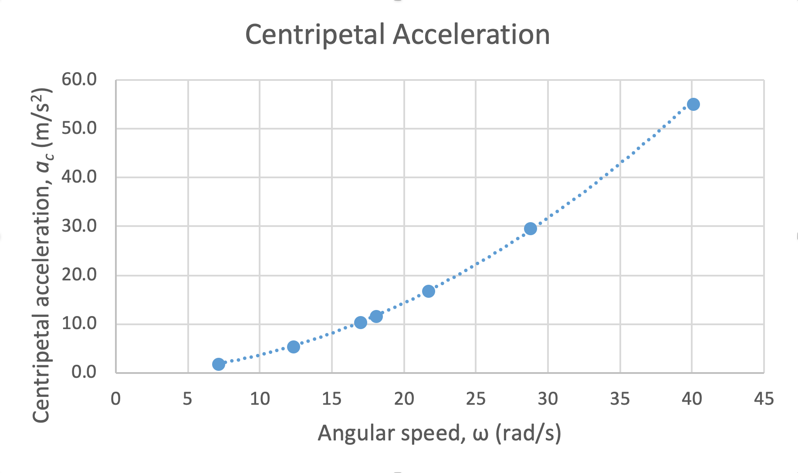
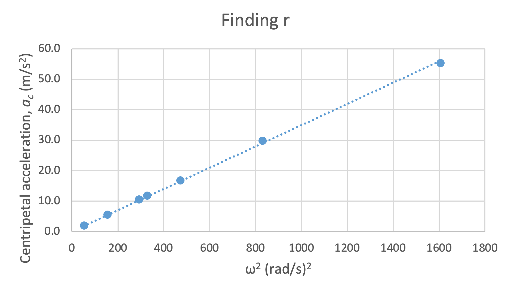

1601 Lab 10
Online textbook: bookshelf.vitalsource.com
iOLab for Scientists and Engineers
Lab 9: The Simple Pendulum
You will need:
- IOLab device
- Someplace to swing your device
Leftover comments from Lab 9
- Biggest Fault: FFT
- 4096 bins was not sufficient in this lab.
- Improvements:
- Have more bins in FFT
- Have a smaller oscillating frequency ($k$,$m$)
- Decrease sampling rate
- Key lesson:
- Many cycles needed for FFT
Comparing values
- We need to verify
$\alpha = r \omega^2$ $\omega = \left(\sqrt{k}\right)m^{-1/2}$

Power fits are difficult to analyze meaningfully
Comparing values
- We need to verify
$\alpha = r \omega^2$ $\omega^2 = k\left( \frac{1}{m} \right)$

Linear fits are easier
Use this for Questions 1–2
Phase plot for an oscillating spring, $k=10$ N/m
Lab 10: The Simple Pendulum
To include
- Clear procedure
- Summary of measurements
- Whether or not these prove $\;T= 2\pi \sqrt{\frac{L}{g}}$
- Whether you believe the theory or your results